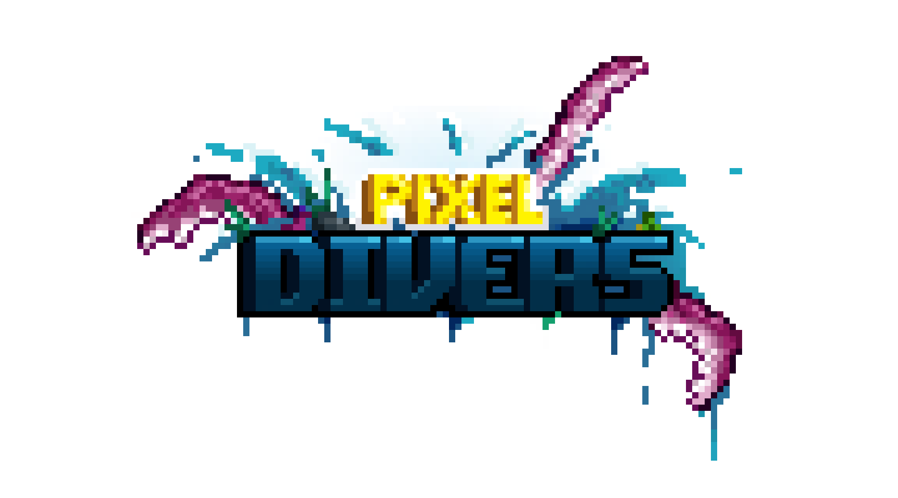

A 2D co-op ocean survival adventure. The surface was never the whole story — something ancient calls from the floor of an alien sea.
It was here before the planet's first tide, and it is the reason you are here now.
Its call pulls you down through a world stacked seven layers deep — from the open air and sunlit shallows through five ever-darker reaches of the sea to a lightless Void where the terrain simply ends and the caller waits.
Every world is procedurally generated from a seed and fully yours to reshape: mine every tile, carve tunnels through the seafloor, and leave marks the world remembers between sessions. Play solo, or host a shared world over Steam and bring your friends down with you.
Descend
The planet's crust is split by massive rock shelves, and each one gates a deeper, stranger layer of the sea. The shallows welcome you with reefs, wrecks, and easy air. Below them wait glowing twilight forests, freezing black water, leviathan graveyards, and crushing trenches. At the very bottom lies the Void, where light is swallowed whole.
Early shelves can be swum through. The deep ones demand rated submarines, heavy drills, and permanent gates — because the sea slowly seals every hole you make in it.
Survive
Your body keeps a strict ledger: oxygen, hunger, thirst, and pressure. Your mind keeps another. Darkness drains your sanity, warping what you see and hear, and the deeper you go the faster it feeds. Light, warmth, and a lit home are how you stay yourself.
Your health never grows; a hundred hours in, the deep is exactly as lethal as it was on day one. Getting stronger means better gear, better vessels, and better judgment.
Build & Progress
Everything you strip from the seafloor feeds a tech tree that climbs from surface scrap to void-grade alloys. Craft diving suits, tanks, tools, and weapons. Raise pressurized seafloor habitats with working air, hydrothermal power, and dry docks — and keep them sealed, because a breach floods rooms and a cut power line kills the lights and the oxygen together.
Each layer's key technology is your goal, your ticket down, and your proof you earned the depth.
Crew Up
Submarines scale with your ambitions, from a nimble one-seat scout to hulking multi-crew vessels with walkable interiors: a helm, gun stations, airlocks, and hulls that need welding mid-fight. Proximity voice chat muffles through steel, so crewmates sound close and the outside sounds wrong.
Fight together with harpoons, blades, and a directional parry system where a perfect block breaks a creature's posture and opens it to a killing blow. Or turn pirate: board rival subs, breach their airlocks, flood their corridors, and raid bases in the lawless deep.
What Awaits Below
- A seed-generated 2D world with distinct biomes, caves, ore veins, wrecks, ruins, and dungeons to loot
- Stalking predators that shadow you just beyond your light, and leviathans guarding each layer like disciples of the thing below
- Persistent worlds: your tunnels, builds, and stash are exactly where you left them
- Steam co-op with friend invites, proximity voice, and drop-in crews
- Optional PvP, from submarine boarding actions to dark raids on enemy bases
- Horror built from pressure, distance, and a shrinking circle of light
The sea grows more hostile the further you descend.
Answer the call, and it will make room for you at the bottom.